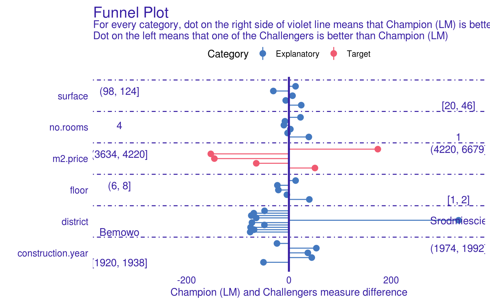
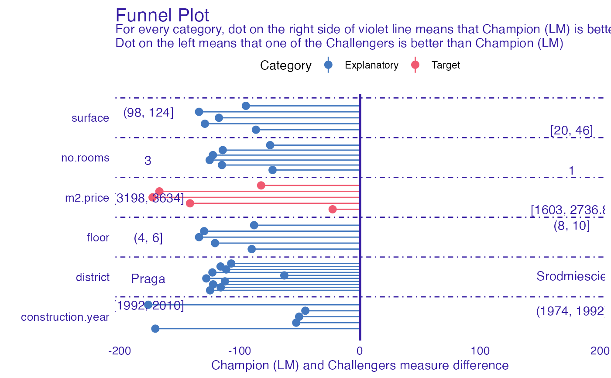

R/funnel_measure.R
funnel_measure.RdFunction funnel_measure allows users to compare two models based on their explainers. It partitions dataset on which models were builded
and creates categories according to quantiles of columns in parition data. nbins parameter determinates number of qunatiles.
For each category difference in provided measure is being calculated. Positive value of that differnece means that Champion model
has better performance in specified category, while negative value means that one of the Challengers was better. Function allows
to compare multiple Challengers at once.
funnel_measure(
champion,
challengers,
measure_function = NULL,
nbins = 5,
partition_data = champion$data,
cutoff = 0.01,
cutoff_name = "Other",
factor_conversion_threshold = 7,
show_info = TRUE,
categories = NULL
)- explainer of champion model.
- explainer of challenger model or list of explainers.
- measure function that calculates performance of model based on true observation and prediction. Order of parameters is important and should be (y, y_hat). The measure calculated by the function should have the property that lower score value indicates better model. If NULL, RMSE will be used for regression, one minus auc for classification and crossentropy for multiclass classification.
- Number of qunatiles (partition points) for numeric columns. In case when more than one qunatile have the same value, there will be less partition points.
- Data by which test dataset will be paritioned for computation. Can be either data.frame or character vector. When second is passed, it has to indicate names of columns that will be extracted fromm test data. By default full test data. If data.frame, number of rows has to be equal to number of rows in test data.
- Threshold for categorical data. Entries less frequent than specified value will be merged into one category.
- Name for new category that arised after merging entries less frequent than cutoff
- Numeric columns with lower number of unique values than value of this parameter will be treated as factors
- Logical value indicating if progress bar should be shown.
- a named list of variable names that will be plotted in a different colour. By deafault it is partitioned on Explanatory, External and Target.
An object of the class funnel_measureIt is a named list containing following fields:
data data.frame that consists of columns:
Variable Variable according to which partitions were made
Measure Difference in measures. Positive value indicates that champion was better, while negative that challenger.
Label String that defines subset of Variable values (partition rule).
Challenger Label of challenger explainer that was used in Measure
Category a category of the variable passed to function
models_info data.frame containig inforamtion about models used in analysys
# \donttest{
library("mlr")
library("DALEXtra")
task <- mlr::makeRegrTask(
id = "R",
data = apartments,
target = "m2.price"
)
learner_lm <- mlr::makeLearner(
"regr.lm"
)
model_lm <- mlr::train(learner_lm, task)
explainer_lm <- explain_mlr(model_lm, apartmentsTest, apartmentsTest$m2.price, label = "LM")
#> Preparation of a new explainer is initiated
#> -> model label : LM
#> -> data : 9000 rows 6 cols
#> -> target variable : 9000 values
#> -> predict function : yhat.WrappedModel will be used ( default )
#> -> predicted values : No value for predict function target column. ( default )
#> -> model_info : package mlr , ver. 2.19.0 , task regression ( default )
#> -> predicted values : numerical, min = 1792.597 , mean = 3506.836 , max = 6241.447
#> -> residual function : difference between y and yhat ( default )
#> -> residuals : numerical, min = -257.2555 , mean = 4.687686 , max = 472.356
#> A new explainer has been created!
learner_rf <- mlr::makeLearner(
"regr.ranger"
)
model_rf <- mlr::train(learner_rf, task)
explainer_rf <- explain_mlr(model_rf, apartmentsTest, apartmentsTest$m2.price, label = "RF")
#> Preparation of a new explainer is initiated
#> -> model label : RF
#> -> data : 9000 rows 6 cols
#> -> target variable : 9000 values
#> -> predict function : yhat.WrappedModel will be used ( default )
#> -> predicted values : No value for predict function target column. ( default )
#> -> model_info : package mlr , ver. 2.19.0 , task regression ( default )
#> -> predicted values : numerical, min = 1792.4 , mean = 3505.998 , max = 6253.683
#> -> residual function : difference between y and yhat ( default )
#> -> residuals : numerical, min = -533.6662 , mean = 5.525504 , max = 745.8761
#> A new explainer has been created!
learner_gbm <- mlr::makeLearner(
"regr.gbm"
)
model_gbm <- mlr::train(learner_gbm, task)
explainer_gbm <- explain_mlr(model_gbm, apartmentsTest, apartmentsTest$m2.price, label = "GBM")
#> Preparation of a new explainer is initiated
#> -> model label : GBM
#> -> data : 9000 rows 6 cols
#> -> target variable : 9000 values
#> -> predict function : yhat.WrappedModel will be used ( default )
#> -> predicted values : No value for predict function target column. ( default )
#> -> model_info : package mlr , ver. 2.19.0 , task regression ( default )
#> -> predicted values : numerical, min = 2112.667 , mean = 3503.111 , max = 6057.692
#> -> residual function : difference between y and yhat ( default )
#> -> residuals : numerical, min = -543.3115 , mean = 8.412214 , max = 776.1234
#> A new explainer has been created!
plot_data <- funnel_measure(explainer_lm, list(explainer_rf, explainer_gbm),
nbins = 5, measure_function = DALEX::loss_root_mean_square)
#>
|
| | 0%
|
|============ | 17%
|
|======================= | 33%
|
|=================================== | 50%
|
|=============================================== | 67%
|
|========================================================== | 83%
|
|======================================================================| 100%
plot(plot_data)
#> $challanger_RF

#>
#> $challanger_GBM

#>
# }